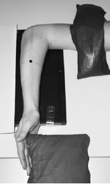

Forearm(Lateral)
Centering point:Directed to mid forearm
Perpendicular to IR

Cassette Size:24cm x 30cm (10 x 12ins) for smaller patients
35cm x 43cm (14 x 14ins) for larger patients
Portrait, divided in 2 usually fits two forearm views, use lead masking for unused half
Exposure Factors:56kVp on
4MaS
FFD:100cm
Bucky/Grid:No
Filter:No
Collimation:Centre: Midforearm
Shutter A: Include elbow joint to base of the first metacarpal
Shutter B: Skin line
Pathologies:Fracture, dislocation, foreign body, infection, tumour
Position of patient and cassette
- Seat patient close to end of table.
- Elbow fully extended.
- Elbow flexed 90 degrees.
- Hand and wrist in lateral position, with thumb up.
- Entire limb in the same plane.
- Shoulder at table level.
- Align and centre forearm to long axis of IR.